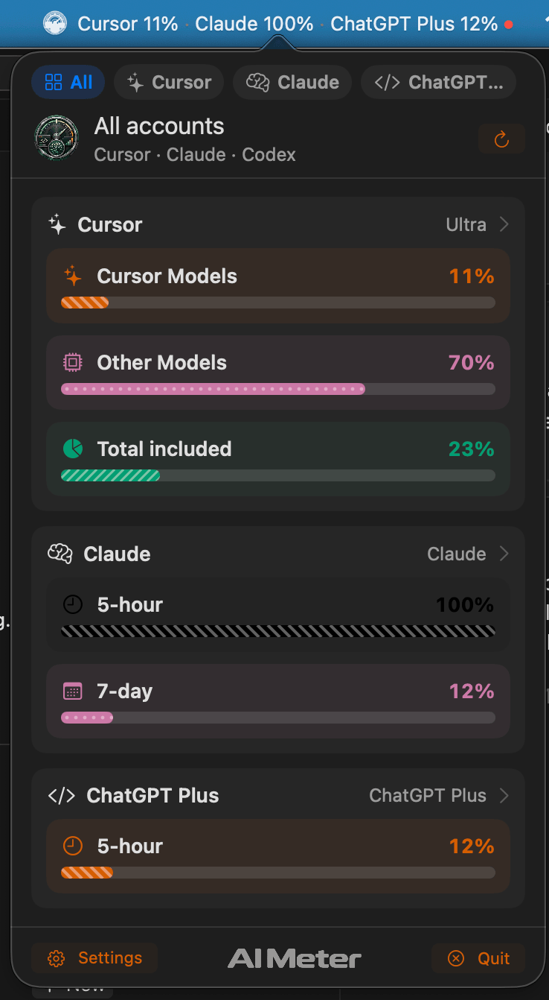
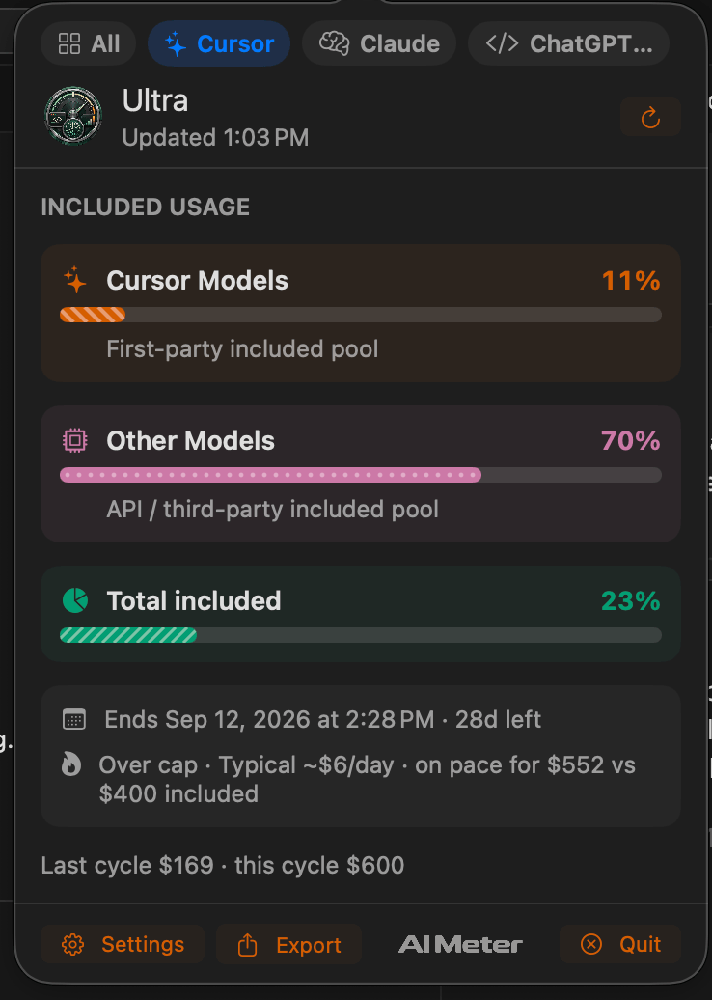
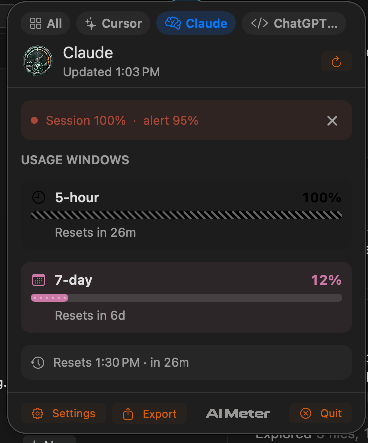
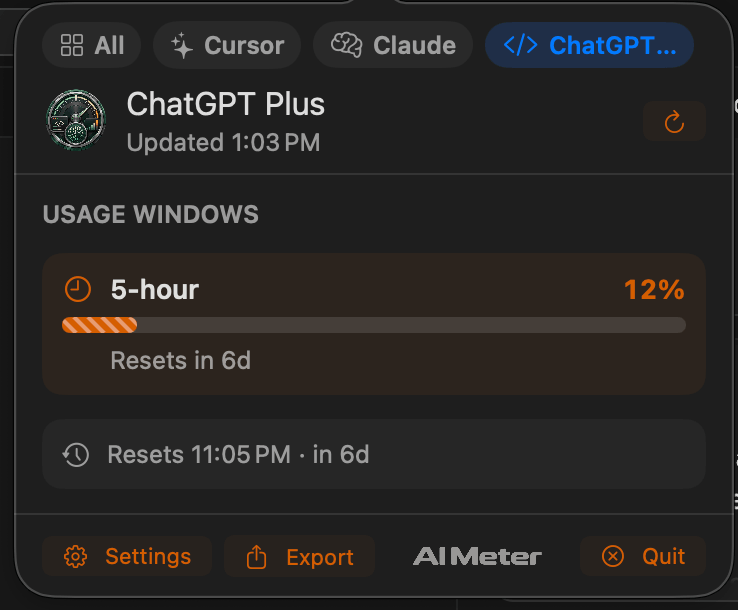

What’s left, in the menu bar.
Included pools, rolling windows, and on-demand spend. Read from the Cursor, Claude, and Codex sessions already on this Mac.
Version 1.0.10. Signed and notarized. macOS 14 or later.

Each plan counts “left” differently.
Cursor tracks included pools for the billing period. Claude and Codex track rolling windows, and tell you when they reset.
Cursor
11%
Cursor models, other models, and the total included pool. Under that, the period end, the pace, and what last cycle cost.

Claude
100% Session full
A 5-hour session and a 7-day window. When the session fills, the popover says so, and how long until it resets.

Codex
12%
The same kind of window, read from the Codex login already on this Mac. ChatGPT message caps are not part of this.

What each account can show
| Reading | Cursor | Claude and Codex |
|---|---|---|
| Included pools | Cursor models, other models, and the total for this billing period | Not shown |
| Rolling windows | Not shown | 5-hour session and 7-day week, with the reset |
| Spend | Plan spend against what is included, plus on-demand | Extra usage or credits, when the account has them |
| Models | Per-model spend and tokens this period | Not shown |
| Where it ran | This Mac, the CLI, and Cloud | Not shown |
The menu bar only shows what you turn on.
Warnings, density, themes, and which accounts are saved. The popover can carry more than the menu bar does.
It uses the login already on this Mac.
Tokens stay in the Keychain. The phone and the watch get a sanitized snapshot, not credentials. AI Meter does not scrape dashboards, and it does not put tokens in iCloud.
- Sign in with Cursor in the app, or connect from the Cursor IDE.
- Add Claude Code from the keychain or ~/.claude/.credentials.json.
- Add Codex from ~/.codex/auth.json.
- Or paste a Cursor token if the window and the IDE both miss.
Mac, iPhone, and Watch
- Mac
- Menu bar extra and desktop widgets. No Dock icon. This is the signed, notarized build, and it updates itself from GitHub Releases.
- iPhone
- The app and Home Screen widgets. TestFlight for now. This version carries a Cursor snapshot.
- Apple Watch
- A glance and complications. Sanitized numbers only. No tokens on the watch.
In Cursor and VS Code, too.
A separate extension. The status bar shows Cursor usage without opening the menu bar app. Claude and Codex stay on the Mac app.
- Status bar
- A glance such as AI 68%, with Cursor Models, Other Models, and Grok Bot when the plan includes that weekly allowance.
- Spend and reset
- On-demand spend when Cursor reports it, and the date the billing cycle resets.
- On this machine
- It reads the Cursor login already stored here. It does not read your code, prompts, or chats.
- Download the extension.
- In Cursor or VS Code, open Extensions, then Install from VSIX.
- Run AI Meter: Use This Cursor Login. Paste Token is there if that misses.
Version 0.1.6. Works in Cursor and VS Code 1.85 or later.
Built by Jewhurst Engineering.
Put it in the menu bar.
- Unzip and open AI Meter.
- Look in the menu bar, not the Dock.
- Settings, then About, can move it into Applications if you launched it from Downloads.
- Sign in with Cursor, Claude Code, or Codex.
Updates are signed and checked with Sparkle before they install. iPhone and Watch builds stay on TestFlight.